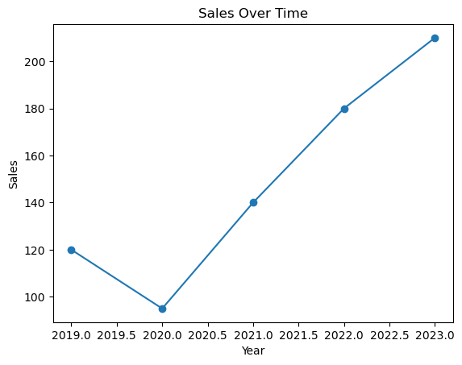
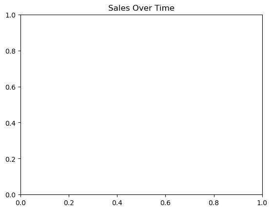

# Import packages, assign aliases
import pandas as pd
import matplotlib.pyplot as pltBasic Python Syntax and Data Types
Import packages
What it is this code imports, I don’t fully grasp. Package, library, module, seem to be used interchangeably.
So far as I’m concerned, they’re R packages.
# Can also import single functions
# means you do not have to (and cannot) type math.sqrt
from math import sqrt
sqrt(16)4.0from math import sqrt, sin # Or several functions.
sin(16), sqrt(16)(-0.2879033166650653, 4.0)Once loaded the function can be called using the alias.
pd.DataFrame is a class from the Python library pandas.
What exactly a class is defies my understanding.
A class in Python is a definition of a type of object.
You can think of a class as a template for creating objects.
It specifies attributes, data stored in a object.
It specifies methods, functions that operate on an object.
It describes what data the object holds and what operations it can perform.
What?
An easier question, what is the . in the below?
pd.DataFrame
pd.DataFrame is a class from the Python library pandas.
The . symbol chains the functions together.
The dot (.) is used to access an attribute or method inside an object or module.
It means roughly: > “go inside this object and use something it contains.”
pd → pandas module
. → access something inside it
DataFrame → the class inside pandas # Create a small dataframe - like a data.frame in R
# Alias now used to reference functins from 'pandas'
data = pd.DataFrame({
'year': [2019, 2020, 2021, 2022, 2023],
'sales': [120, 95, 140, 180, 210]
})
# Convention is - one code chunk is called a 'cell'.
# One cell == one output.
print(data) year sales
0 2019 120
1 2020 95
2 2021 140
3 2022 180
4 2023 210Returning to what is a class is…
A class is not a function, though it can sometimes be used in a similar way.
In practical terms, a class is a type definition, while a function is an operation.
df = pd.DataFrame(data)
This looks like calling a function, but it actually means:
create a new instance of the class DataFrame
So, a practical way to think about it
- Function → performs an operation
- Class → defines a kind of object you can create
# Quick summary - like summary() in R.
# Applies the function 'describe' to the object 'data'.
print(data.describe()) year sales
count 5.000000 5.000000
mean 2021.000000 149.000000
std 1.581139 46.151923
min 2019.000000 95.000000
25% 2020.000000 120.000000
50% 2021.000000 140.000000
75% 2022.000000 180.000000
max 2023.000000 210.000000Plotting this data
# The code below iteratively adds to the current plot, which is not stored as a new object
# Although, with a different approach it could be.
# Brackets around function arguments, like R.
# Commas separating function arguments, like R.
# marker='o' places a circular marker at each data point on the line.
plt.plot(data['year'], data['sales'], marker='o')
plt.title('Sales Over Time') # Label current axes object
plt.xlabel('Year')
plt.ylabel('Sales')
# Retrieve the current Figure object managed internally by Matplotlib
# and store a reference to it in the variable 'fig'.
fig = plt.gcf()
# Render (display) all currently open figures in the output.
# In notebook environments this often just forces the plot to display.
plt.show() 
# Attempt to display the Figure object by evaluating the variable.
# In many notebook setups this returns nothing visible because the figure
# was already rendered (and sometimes closed) when plt.show() was called
# earlier, so Jupyter does not automatically render it again.
fig
# Try to show the figure using plt.show(fig).
# plt.show() does not take a figure argument in standard Matplotlib; it
# simply renders all currently active figures. Since the figure may no
# longer be active, this line produces no visible output.
plt.show(fig)
# Show the Python type of the object stored in 'fig'.
# This confirms that 'fig' still exists as a Matplotlib Figure object.
type(fig)
# Explicitly ask the notebook display system to render the figure object.
# display() bypasses Matplotlib's state system and directly tells Jupyter
# to render the stored Figure object.
display(fig)
# After running plt.close() above the plot is now empty.
# There is no 'current' plot.
plt.close()
plt.title('Sales Over Time')Text(0.5, 1.0, 'Sales Over Time')
Data types
Single values
# Create a numeric variable.
# 'sales_total' stores a number (an integer in this case).
# In Python, variables are created by assignment using '='.
# The value is stored in memory and the name 'sales_total'
# becomes a reference to that value.
sales_total = 12500
# Create a string variable.
# 'report_title' stores text data (a string).
# Strings are written inside quotation marks.
# This variable could be used later for labels, titles, or printed output.
report_title = "Annual Sales Report"
# Check the values of the variables by evaluating them.
display(sales_total) # In notebooks, only the last output is shown, unless explicitly requested
report_title # Will not appear
# Check the data types of each variable.
# This confirms that one variable holds numeric data (int)
# and the other holds text data (str).
print(type(sales_total)) # Alternative to display.
type(report_title)12500<class 'int'>str# Alternatively...
type(sales_total), type(report_title)(int, str)# Create a float variable.
# 'growth_rate' stores a decimal number.
# The decimal point tells Python this is a floating-point value.
growth_rate = 0.075
# Check the variable's data type.
type(growth_rate)float# Preferred Python style, one output per cell...
growth_rate0.075# Testing...
print("Growth rate:",# growth_rate, "; Type is...", type(growth_rate))#Cell In[13], line 2 print("Growth rate:",# growth_rate, "; Type is...", type(growth_rate))# ^ SyntaxError: incomplete input
a, b = 1, 2
a1b2Operations with variables
new_sales_total = (1 + growth_rate) * sales_total
new_sales_total, type(new_sales_total) # Type is float(13437.5, float)test_logic = False
test_logic, type(test_logic)(False, bool)# Are we selling more than before?
sales_total > new_sales_total # Yes.FalseA tuple
Data type, tuple: A tuple is an immutable, ordered collection of values grouped together in Python.
test_tuple = growth_rate, type(growth_rate)
test_tuple(0.075, float)# Access tuple components...
test_tuple[0]0.075# A feature of tuples is immutability...
test_tuple[1] = "New"------------------------------------------------------------- TypeError Traceback (most recent call last) Cell In[21], line 2 1 # A feature of tuples is immutability... ----> 2 test_tuple[1] = "New" TypeError: 'tuple' object does not support item assignment
A series
# sales becomes a 'Series'
# a pandas type object
# roughly equates to a vector.
sales = data['sales']
sales, type(sales)(0 120
1 95
2 140
3 180
4 210
Name: sales, dtype: int64,
pandas.Series)# Calculation can be applied to it as a vector here.
sales * (1 + growth_rate)0 129.000
1 102.125
2 150.500
3 193.500
4 225.750
Name: sales, dtype: float64# Amend every value as with R.
sales + 100 130
1 105
2 150
3 190
4 220
Name: sales, dtype: int64A list
# A# list, unlike a tuple it is mutable, and still ordered
numbers = [1,2,3]
numbers, type(numbers), numbers[1], numbers[-1]
# Note indexing from the ends starts with -1, from the beginning with 0.([1, 2, 3], list, 2, 3)# This does not edit every value in numbers, it appends 1 to the list
numbers + [1][1, 2, 3, 1]Element-wise edits, loops
# Element-wise operations
# This style of syntax is called a list comprehension
# But seems essentially a loop to me.
[x * 2 for x in numbers] [2, 4, 6]# Using a loop...
sales = [1200, 1500, 1800]
adjusted_sales = []
for x in sales:
adjusted_sales.append(x * 1.10)
adjusted_sales[1320.0, 1650.0000000000002, 1980.0000000000002]# Cross-list element-wise operations
# Using a list comprehension
sales = [1200, 1500, 1800]
costs = [800, 900, 1000]
profit = [s - c for s, c in zip(sales, costs)]
pd.DataFrame({
'sales': sales,
'costs': costs,
'profit': profit
})| sales | costs | profit | |
|---|---|---|---|
| 0 | 1200 | 800 | 400 |
| 1 | 1500 | 900 | 600 |
| 2 | 1800 | 1000 | 800 |
# OR with zip()
# zip() pairs corresponding elements from two lists.
list(zip(sales, costs, profit))[(1200, 800, 400), (1500, 900, 600), (1800, 1000, 800)]Applying functions
# Calculations with lists
sales = [1200, 1500, 1800, 2000]
sum(sales) # total of all values6500len(sales) # number of elements4min(sales) # smallest value1200max(sales) # largest value2000sum(sales) / len(sales)1625.0# Comparing display and print,
# Print is the more basic function, display returns formatted content,
# e.g. a rendered plot / a html table
display(data)| year | sales | |
|---|---|---|
| 0 | 2019 | 120 |
| 1 | 2020 | 95 |
| 2 | 2021 | 140 |
| 3 | 2022 | 180 |
| 4 | 2023 | 210 |
print(data) year sales
0 2019 120
1 2020 95
2 2021 140
3 2022 180
4 2023 210dict or dictionary
# alike to a named R list
# It assigns values a numeric label, a key, that can be used to access it
# key-value pairs
# agnostic as to what the value is
# written with curly braces {}
sales_data = {
"year": 2023,
"sales": 1500
}
sales_data, type(sales_data)({'year': 2023, 'sales': 1500}, dict)sales_data["year"] # Access a value2023sales_data.keys() # names...dict_keys(['year', 'sales'])sales_data.values() # names...dict_values([2023, 1500])del sales_data["year"]
sales_data.items()dict_items([('sales', 1500)])# Adding a new item
sales_data["Year"] = 2026
sales_data{'sales': 1500, 'Year': 2026}# Can edit values in same way
sales_data["Year"] = 2025
sales_data{'sales': 1500, 'Year': 2025}# Another dictionary to nest within `sales_data`
jan_sales = {
"month": "Jan",
"sales": 120,
}
jan_sales{'month': 'Jan', 'sales': 120}# Add dictionary as an item within a dictionary
sales_data["Jan"] = jan_sales
sales_data{'sales': 1500, 'Year': 2025, 'Jan': {'month': 'Jan', 'sales': 120}}A set in Python.
# Stores undordered collection unique elements (duplicates dropped)
# They are mutable, bits can be edited.
# Position matters not.
numbers = {1, 2, 3, 4} # Created with curly braces
numbers2 = set([2,2,3,3,1,1,4,4]) # Or created from other objects
numbers, numbers2 # Duplicates in numbers2 dropped.({1, 2, 3, 4}, {1, 2, 3, 4})numbers == numbers2 # Order matters not. TrueConditional flow
# Important Python idea: indentation defines blocks, not braces.
# Indented lines belong to preceding statement that introduces a block.
# All lines with the same indentation level belong to the same block.
# A block ends when the indentation returns to the previous level.
# Recommended 4 spaces per indentation level.
x = 11
if x > 10:
print("large")
else:
print("small")large# Without indentation Python cannot determine the block structure.
x = 11
if x > 10:
print("large")
else:
print("small")Cell In[50], line 4 print("large") ^ IndentationError: expected an indented block after 'if' statement on line 3
Other loop structures
for i in range(5):
print(i)0
1
2
3
4# -= is an augmented assignment operator,
# it updates the value by, in this case, minusing 1
# and assigning the result into x.
x = 10
while x > 0:
x -= 1
print("x is now ", x)
if (x == 0): print("Loop stops, x is zero.")
# += is the reverse, plust the value on the right of this operator. x is now 9
x is now 8
x is now 7
x is now 6
x is now 5
x is now 4
x is now 3
x is now 2
x is now 1
x is now 0
Loop stops, x is zero.# Can also append text...
text = "Hello"
text += " World"
text'Hello World'# Or in a loop
words = ["The", "end", "of", "the", "world"]
sentence = ""
for x in words:
sentence += x
sentence += " "
print(sentence) # No indentation, ends loop. The end of the world # Here, sentence is a list
# But when the loop adds 'x' to it, it is only a string variable
# So, rather than add each string, it adds each character of the string
# Weird.
words = ["The", "end", "of", "the", "world"]
sentence = [""]
for x in words:
sentence += x
sentence += " "
print(sentence) # No indentation, ends loop. ['', 'T', 'h', 'e', ' ', 'e', 'n', 'd', ' ', 'o', 'f', ' ', 't', 'h', 'e', ' ', 'w', 'o', 'r', 'l', 'd', ' ']Functions
# Define a function called 'add'
def add(a, b):
return a + b
add(2, 3), add(100, 60)(5, 160)# Key ideas: parameters, return values, default arguments
# Here:
# x is a changeable parameter (argument)
# n = 2, sets n by default to 2
# and the x raised to the power of n is returned
def power(x, n=2):
return x ** n
power(3), power(x = 3, n = 3)(9, 27)# ** is the exponentiation operator here, weird, maybe it is in R too?
# Different uses for star symbols, one, astrology, but anyway.
# * multiplication, fine.
# ** exponentiation, fine.
# *args, can be used to collect positional arguments to a function into a tuple.
numbers = [1, 2, 3]
print(*numbers)1 2 3# ** dictionary unpacking - Don't get its utility
def introduce(name, age):
print(name, age)
person = {"name": "Anna", "age": 25}
new_person = introduce(**person)
new_person, type(new_person), person, type(person)Anna 25(None, NoneType, {'name': 'Anna', 'age': 25}, dict)# Merging dictionaries... More useful I suppose
a = {"x": 1, "y": 2}
b = {"z": 3, "y": 1}
combined = {**a, **b} # Note, the latter value overrides the earlier one if values repeat.
print(combined){'x': 1, 'y': 1, 'z': 3}Read in data
with open("Text file.txt") as f:
text = f.read()
# open("Text file.txt") opens the file named data.txt.
# The default mode is read mode ("r"), so it expects the file to already exist.
# as f assigns the opened file object to the variable f.
# with is a context manager. It automatically closes the file when the block finishes, even if an error happens.
# f.read() reads the entire file contents.
# The contents are returned as a single string.
# That string is stored in the variable text.
print(text)The small cafe on the corner opens early every morning.
A few regulars arrive before work and sit by the window with coffee.
The street is usually quiet at that time, with only the occasional bus passing.
Some people read the news, others scroll on their phones.
Around mid-morning the place fills up and the quiet disappears.# Or, writing to a new file...
with open("Text file updated.txt", "w") as f:
f.write(text + "\n What is going on here?")
# The second option, previously "r", now "w" is explicit as not the default.Other data types
Data frames
import pandas as pd
df = pd.read_csv("data.csv")
df.head()| name,age,city,score | |
|---|---|
| 0 | Alice,29,London,88 |
| 1 | Ben,34,Manchester,92 |
| 2 | Clara,26,Bristol,79 |
| 3 | Daniel,31,Leeds,85 |
| 4 | Eva,28,Birmingham,91 |
# Extract first column, as a string
col = df.columns[0]
col, type(col) ('name,age,city,score', str)# This can later be split with split...
col.split(',')['name', 'age', 'city', 'score']# Split columns out at commas
df2 = df[col].str.split(',', expand=True)
df2| 0 | 1 | 2 | 3 | |
|---|---|---|---|---|
| 0 | Alice | 29 | London | 88 |
| 1 | Ben | 34 | Manchester | 92 |
| 2 | Clara | 26 | Bristol | 79 |
| 3 | Daniel | 31 | Leeds | 85 |
| 4 | Eva | 28 | Birmingham | 91 |
# Add names to the columns
df2.columns = col.split(',')
df2| name | age | city | score | |
|---|---|---|---|---|
| 0 | Alice | 29 | London | 88 |
| 1 | Ben | 34 | Manchester | 92 |
| 2 | Clara | 26 | Bristol | 79 |
| 3 | Daniel | 31 | Leeds | 85 |
| 4 | Eva | 28 | Birmingham | 91 |
df2.dtypesname str
age str
city str
score str
dtype: objectdf2['score'].sum()'8892798591'NumPy
A NumPy integer is an integer type defined by NumPy rather than by standard Python.
It behaves like a normal integer but is designed for numerical arrays and efficient computation.
Why NumPy has its own integers because they:
- have fixed sizes (8-bit, 16-bit, 32-bit, 64-bit),
- allow efficient array storage,
- match numeric types used in C and scientific computing.
df2['score'] = pd.to_numeric(df2['score'])
df2['score'].sum()
# A NumPy integer object representing the number 435 stored as a 64-bit integer.np.int64(435)import numpy as np
arr = np.array([1,2,3,4,5,6,7,8,9])
arr, arr.mean()(array([1, 2, 3, 4, 5, 6, 7, 8, 9]), np.float64(5.0))Arrays (NumPy)
Core similarity, both R arrays and Python arrays (usually from NumPy) are:
- containers for multiple values
- stored in a single object
- arranged in dimensions (1D, 2D, 3D, etc.)
- designed for vectorised operations
R: column-major (fills by column)
NumPy: row-major (fills by row)
Python allows expansion to more than 2 dimensions.
# 2D array
np.array([[1,2,3],[4,5,6],[7,8,9]])array([[1, 2, 3],
[4, 5, 6],
[7, 8, 9]])# 3D array
np.array([
[[1,2,3],[4,5,6],[7,8,9]],
[[1,2,3],[4,5,6],[7,8,9]]
])array([[[1, 2, 3],
[4, 5, 6],
[7, 8, 9]],
[[1, 2, 3],
[4, 5, 6],
[7, 8, 9]]])Is a 1 dimensional array a Panda Series?
Both represent:
* a one-dimensional sequence,
* same-type values,
* vectorised operations.
However, a pandas Series has labels (an index), which can be either numeric or strings (or dates).
A one-dimensional array (1D array) is a collection of values arranged along a single axis, where each element is accessed using one index.
a = np.array([4,7,2,9])
a
# This is a 1D array with shape (4,).array([4, 7, 2, 9])a[3]np.int64(9)# This gives an error, indexing starts at zero.
a[4]------------------------------------------------------------- IndexError Traceback (most recent call last) Cell In[76], line 2 1 # This gives an error, indexing starts at zero. ----> 2 a[4] IndexError: index 4 is out of bounds for axis 0 with size 4